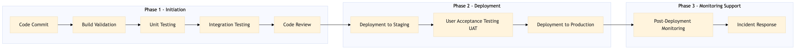

This process document outlines the CI/CD pipeline and DevOps management for OTA and TMC systems, ensuring efficient deployment and maintenance of platform technologies and APIs.
| Trigger | Code change or new feature request in version control system (e.g., GitHub) |
| Outcome | Successful deployment of code changes to production environment with minimal downtime and high availability. |
| Systems | Version Control System (e.g., GitHub) Jenkins, GitLab CI, CircleCI JUnit, PyTest Selenium, Postman Kubernetes, AWS ECS Prometheus, Grafana Ticketing System (e.g., Jira) |

Click to enlarge
| Step | Name & Pain Point | Role | System | Input | Output | KPI | Flags |
|---|---|---|---|---|---|---|---|
| 1.1 | Code Commit Code conflicts or build failures | Developer | Version Control System (e.g., GitHub) | Source code changes | Commit with CI trigger | Time to commit | ⚠ Exception |
| 1.2 | Build Validation Long build times | CI/CD Pipeline | Jenkins, GitLab CI, CircleCI | Commit with CI trigger | Build artifacts or failure report | Build success rate | ◆ Decision |
| 1.3 | Unit Testing Flaky tests | CI/CD Pipeline | JUnit, PyTest | Build artifacts | Test results | Test pass rate | ◆ Decision |
| 1.4 | Integration Testing Complex integration scenarios | CI/CD Pipeline | Selenium, Postman | Test results | Integration test results | Integration pass rate | ◆ Decision |
| 1.5 | Code Review Overly strict review processes | Peer Developer | Version Control System (e.g., GitHub) | Integration test results | Approved code changes or feedback | Review cycle time | ◆ Decision |
| 1.6 | Deployment to Staging Environment misconfigurations | CI/CD Pipeline | Kubernetes, AWS ECS | Approved code changes | Staging environment deployment | Time to staging deployment | ⚠ Exception |
| 1.7 | User Acceptance Testing (UAT) User feedback loop | QA Engineer | Manual testing tools | Staging environment deployment | UAT results | UAT pass rate | ◆ Decision |
| 1.8 | Deployment to Production Rollback procedures | CI/CD Pipeline | Kubernetes, AWS ECS | UAT results | Production environment deployment | Time to production deployment | ⚠ Exception |
| 1.9 | Post-Deployment Monitoring Real-time monitoring | DevOps Engineer | Prometheus, Grafana | Production environment deployment | Monitoring metrics | Uptime percentage | ◆ Decision |
| 1.10 | Incident Response Root cause analysis | DevOps Engineer, Support Team | Ticketing System (e.g., Jira) | Monitoring metrics or user reports | Incident resolution | Mean Time to Resolution (MTTR) | ◆ Decision |